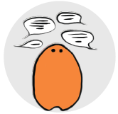
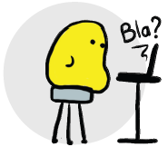

À la Une !
Liberté 0 est présente lors de nombreux événements, venez-nous voir !
Prochainement…
- 15-22/08/2015,
Heidelberg, Allemagne -
DebConf 2015 :
Samuel Thibault animera une conférence.
Le programme sera bientôt disponible sur le site
DebConf15.
- 04-10/07/2015, Beauvais, France -
RMLL :
Liberté 0 tiendra un stand pendant les
journées grand public
(4 et 5 juillet, sur le parvis de la
cathédrale Saint-Pierre)
et dans
le village associatif
pendant la conférence.
En plus, nous animerons les conférences suivantes :
- Lundi 6 juillet :
- Mardi 7 juillet :
- Mercredi 8 juillet :
- Jeudi 9 juillet :
Découvrez aussi les autres conférences dans le
fil rouge Accessibilité.
Découvrez le programme sur le site rmll.info.
On y était
Festival Extra Ordinaire
14-15/05/2015, Paris, France -
Liberté 0 organisait l'évènement
Le
logiciel libre pour reprendre le contrôle de sa vie
avec des ateliers découvertes, des présentations, un AccessCamp et
des démonstrations (notamment de
Hypra et de
Mail2Voice).
Voir aussi
le programme sur le site de Charles et Compagnie et
L'Agenda du Libre.
Premier samedi du Libre
01/04/2015 -
Premier samedi du Libre : Texou a tenu un stand et et a animé une conférence.
Voir aussi les évènements passés.
Le numérique libre et accessible à tous et toutes
Le numérique est partout présent dans nos vies : pour communiquer,
s'informer, se former, travailler, faire ses courses, se divertir…
Or, c'est une véritable chance pour toutes les personnes pour lesquelles
le monde physique peut constituer autant d'obstacles lorsqu'on est
en situation de handicap.
Mais pour que le numérique soit à la hauteur de la promesse de
Liberté qu'il porte,
encore faut-il qu'il soit accessible et respecte les droits d'accès,
de modification et de partage de ses utilisateurs.
Liberté 0 est une association à but non lucratif qui entend défendre
une vision inclusive du logiciel libre, liberté et accessibilité devant
aller de pair pour une Liberté réelle et un accès égal à cette Liberté
pour toutes et tous.
Contribuez !
Participez : les listes de discussion
Nous échangeons principalement via des listes de discussion par courriel (e-mail).
Nous avons d'une part une liste principale, francophone :
liste@liberte0.org ;
et d'autre part une liste technique, anglophone : tech@liberte0.org.
N'hésitez pas à nous rejoindre !

Espace de travail : le Wiki
Pour contribuer sur nos nombreux projets, nous utilisons un wiki disponible à l'adresse
wiki.liberte0.org.
Cet espace permet de proposer de nouveaux projets, de suivre les projets existants
et de travailler sur des contenus de manière progressive.
Pour avoir une idée des travaux sur lesquels nous travaillons, rendez-vous sur notre wiki !
Échanger en direct : IRC
Pour un échange direct avec les membres de Liberté 0, rendez-vous sur IRC.
Ce terme barbare pour les personnes non familières signifie seulement que vous pourrez tchater avec les membres en direct,
en vous connectant sur une adresse, notre canal de discussion.
Nous avons élu domicile sur le serveur Freenode,
et sommes joignables sur le canal #liberte0.
Pour vous connecter, vous pouvez
utiliser un client IRC ou
vous connecter directement sur le webchat de Freenode, mais attention, le webchat n'est pas accessible.
